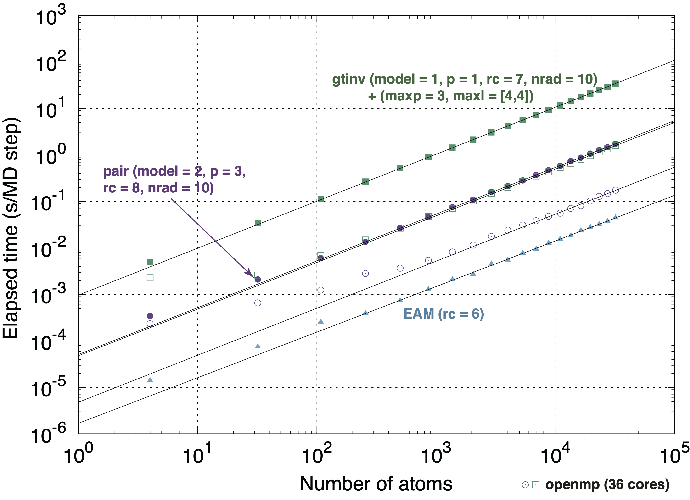

Lammps simulations using machine learning potentials¶
lammps-mlip package and boost library are required to use machine learning potentials in lammps code. lammps-mlip package for LAMMPS software is available on GitHub [lammps-mlip-package]. Machine learning potentials for a wide range of systems can be found in Machine Learning Potential Repository. If you use lammps-mlip package and machine learning potentials in the repository for academic purposes, please cite the following article [1].
[1] A. Seko, A. Togo and I. Tanaka, “Group-theoretical high-order rotational invariants for structural representations: Application to linearized machine learning interatomic potential”, Phys. Rev. B 99, 214108 (2019).
Building lammps with lammps-mlip package¶
Unzip lammps-mlip.tar.gz, and then copy all the components in the lammps-mlip package to the latest lammps source code directory as
> cp -r lammps-mlip/lib/mlip $(lammps_src)/lib > cp -r lammps-mlip/src/USER-MLIP $(lammps_src)/src
Modify $(lammps_src)/lib/mlip/Makefile.lammps to specify an installed directory of the boost library.
Add “user-mlip” to variable PACKUSER defined in $(lammps_src)/src/Makefile and activate user-mlip package as
> vi $(lammps_src)/src/Makefile PACKUSER = user-atc user-awpmd user-cgdna user-cgsdk user-colvars \ user-diffraction user-dpd user-drude user-eff user-fep user-h5md \ user-intel user-lb user-manifold user-meamc user-mgpt user-misc user-molfile \ user-netcdf user-omp user-phonon user-qmmm user-qtb \ user-quip user-reaxc user-smd user-smtbq user-sph user-tally \ user-vtk user-mlip > make yes-user-mlipBuild lammps binary files
> make serial -j 36
Lammps input commands to specify a machine learning potential¶
The following lammps input commands specify a machine learning potential.
pair_style mlip_pair
pair_coeff * * pyml.lammps.mlip Ti Al
or
pair_style mlip_gtinv
pair_coeff * * pyml.lammps.mlip Ti Al
Scaling with respect to number of atoms¶
{kind=link}
Linear scaling with respect to the number of atoms is achieved in MLPs with pairwise structural features and those with group theoretical invariants derived from spherical harnomics.
So the required computational time can be estimated by , where  denotes the required computational time for single step and single atom.
denotes the required computational time for single step and single atom.
Parameters controlling accuracy and computational cost of machine learning potentials¶
Input parameters used to construct a machine learning potential can be found in the correponding potential file pyml.lammps.mlip. Input parameters that control the accuracy and the computational cost are listed as follows.
1. Structural features representing neighboring atomic distribution
Cutoff radius (Angstrom)
Structural feature type (pairwise features or group theoretical invariants derived from spherical harmonics)
Radial function type (Gaussian or spherical Bessel functions)
2. Energy model with respect to structural features
Polynomial model type (1: only powers of features, 2: cross terms of all features, 3: cross terms of pairwise features)
Polynomial order of energy model
3. Truncation of group theoretical invariants
Maximum angular number of spherical harmonics
Maximum order of invariants
Whether or not symmetric invariants are used
A more detailed description can be found in the article [1].
[1] A. Seko, A. Togo and I. Tanaka, “Group-theoretical high-order rotational invariants for structural representations: Application to linearized machine learning interatomic potential”, Phys. Rev. B 99, 214108 (2019).
A tutorial for lammps simulation¶
Generating Lammps structure file from poscar
> $(pyml)/tools/lammps/poscar2lammps.py -p poscar > structure.lammps > cat poscar L12 1.00000000000000 4.0000000000000000 0.0000000000000000 0.0000000000000000 0.0000000000000000 4.0000000000000000 0.0000000000000000 0.0000000000000000 0.0000000000000000 4.0000000000000000 Ti Al 1 3 Direct 0.0000000000000000 0.0000000000000000 0.0000000000000000 0.0000000000000000 0.5000000000000000 0.5000000000000000 0.5000000000000000 0.0000000000000000 0.5000000000000000 0.5000000000000000 0.5000000000000000 0.0000000000000000 > cat structure.lammps # converted from poscar to lammps 4 atoms 2 atom types 0.0 4.000000000000000 xlo xhi 0.0 4.000000000000000 ylo yhi 0.0 4.000000000000000 zlo zhi 0.000000000000000 0.000000000000000 0.000000000000000 xy xz yz Atoms 1 1 0.000000000000000 0.000000000000000 0.000000000000000 2 2 0.000000000000000 2.000000000000000 2.000000000000000 3 2 2.000000000000000 0.000000000000000 2.000000000000000 4 2 2.000000000000000 2.000000000000000 0.000000000000000
Structure optimization
lammps input file
dimension 3 units metal read_data structure.lammps pair_style mlip pair_coeff * * pyml.lammps.mlip Ti Al # Define minimization parameters variable etol equal 0.0 variable ftol equal 1.0e-10 variable maxiter equal 10000 variable maxeval equal 10000 fix 3 all box/relax aniso 0.0 minimize ${etol} ${ftol} ${maxiter} ${maxeval} write_dump all custom dump.atom id type x y z modify format line "%d %d %10.15g %10.15g %10.15g"Conversion from dump.atom to poscar
$(pyml)/tools/lammps/lammps2poscar.py dump.atom